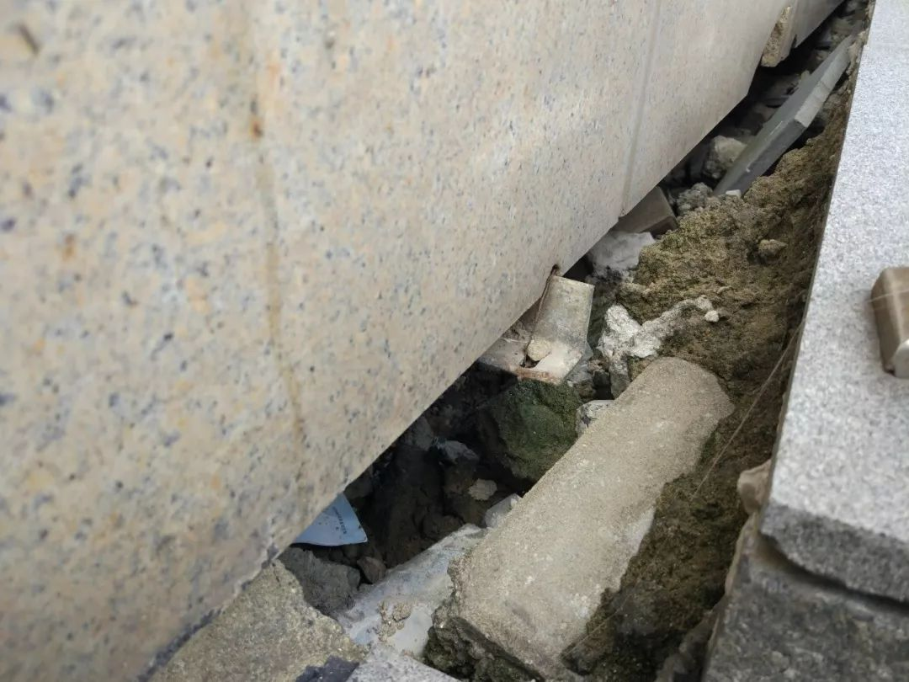

（写在前面：本文只针对闵行校区的情况）
自华师大本科评估顺利通过，入选双一流学校以来，一幢幢的办公楼架起了脚手架，开始了外立面的重新装修。
诚然，学校本来的外立面装修的确不怎么样，然而在学校的内部设施也有更新维护的需求，学校的预算，尤其是基建预算有限的情况下，优先修缮建筑的外立面还是内部设备的维护更新就成了一个关键的问题。
一个学校的建筑，就是一个学校的脸面，而这个脸面主要是由建筑的外立面撑起来的。学校各个建筑的外立面远看颜色还可以，但是一旦走进了就能发现不少惊喜——以小砖块拼接起来的墙面十分斑驳，不少已经掉落了，十分影响形象。
在拥有钢玻璃外结构的人文楼，也能发现钢管已经锈蚀掉了。再低头看看，基本上所有楼的楼底都有很大的裂缝，如果运气好的话，可以在其中发现一些可爱的小动物，比如说猫。
大楼外部的无障碍通道更是重灾区，这些无障碍通道为了让身体有恙的同学尽早好起来，用千奇百怪的方式倾斜，断裂，构成了一个个难度不一的试炼。
至于每逢下雨都会出现的水坑，总是会在你最需要的时刻出现在你的面前，给你意外的惊喜，比如说当你冒着暴雨以百米冲刺地速度冲向二教的时候。
学校的建筑的外立面存在不少问题，选择优先解决这些问题当然是可以理解的，但同时内部设施也存在极大的维护需求，尤其是与学生利益关系密切的生活区。

寝室楼的锅炉，为了给我们的洗澡增添更多的乐趣，总是时好时不好， 永远不知道下一秒管子里出来的是冷水还是热水，面前的龙头能用还是不能用，20号楼那坏了一半的喷头让每次洗澡都是一次赌博，至今7号楼的小仙女们仍然不能在自己楼里洗澡。某些寝室楼浴室过早的关闭时间也让熬夜赶工、学习的同学们一不小心就无澡可洗。
至于空调，当需要制热的时候，暖气只能温暖空调底下的同学；当需要制冷的时候，窗边舒服门边热死；一看装配日期已经10多年了，二看电费高上天。还有时常坏掉的风扇，厕所门把手，遍地都是惊喜。
教学楼的设备非常好用，虽然时不时连不上网，虽然投影的清晰度已经落后时代，虽然话筒时不时地会出各种错误，但是预装的XP系统正如一瓶陈年的红酒，越卡越香。办公楼的沙发是不会换的，这样子才能保持一种悠久的历史感；图书馆的电脑也考虑到学生计算机水平不过硬，降低运行速度以倒逼学生写出更高效的代码。
为了创建世界一流大学，少不了要加强基础建设。那么是优先重新装修外立面，还是优先提升楼内设施呢？复旦大学给出的答案是后者，他们启动了内涵提升计划，对建筑的内部设施进行改造升级，于是得到了以下效果：
而我们学校用实践证明了一个学校的建筑外表要好看、整齐才是更重要的，所以在新的河口海岸大楼竣工后，为了学校院系楼区域的色调和谐，让所有楼都变成灰色，开始了外立面的整修，先是物理-信科楼，然后是数统楼，这两天又轮到了人文楼。远处看上去效果着实不错。
但葱葱走近了看看，发现效果如下：
但是以上并不是全部的情况，事实上复旦所做的内涵提升，也只是一小部分，他们校区内部的寝室楼仍然没有热水供应，一旦离开主轴线来到旁边一点的地方，深一脚浅一脚还是必然的。
我们学校的外立面装修也是很好看的，并且在图书馆的设备上也是时常有更新。但是有的时候学校的工程优先关照了面子，却对学生的生活显得力不从心，于是也才会发生锅炉修了仍然是老样子的情况。
而复旦虽然看起来内涵提升了，但其所做的仍然是和装修外立面性质相同的事情。一个学校呈现的外表固然重要，但是其与学生的生活最息息相关的事务仍然不能偏废。
诚然，学校的精力如果放在这个方面，其效果可能并不会为外人所知，可能不会那么好看，在任何一个有关学校排名的指标中也不会包含这一方面，但是在这一方面确是对师生的一种关怀，是对“爱在华师大”真正的、鲜活的实践，赋予了其现实的意义。
如果有一天，从华师大走出的学生提起母校会心一笑时，想起的不只有“远东最美学府”的称号，还包括只有在华师大生活学习过才能体验到的“关怀”，那真正活在自己心里，参与自己的成长的爱，那么葱，终于如愿地失去了一部分存在的价值。
接下来是两学一做时间：
“为人民是最大的政绩”——《习近平谈治国理政》